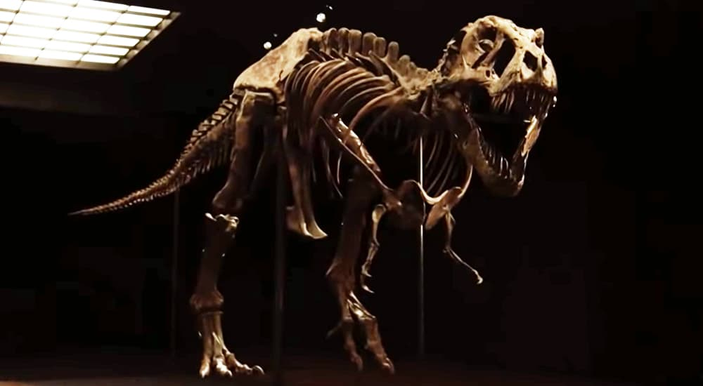
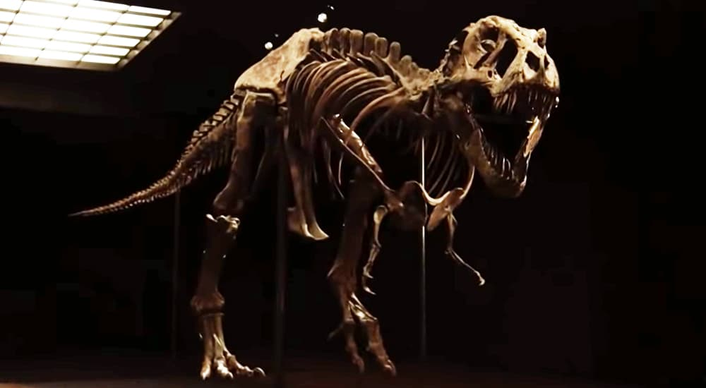
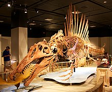

Tiranossauro Rex

Tiranossauro Rex

Tyrannosaurus (em português Tiranossauro) é um gênero de dinossauros terópodes celurossauros que viveram durante o final do período cretáceo, há aproximadamente 66 milhões de anos, em toda a região que hoje é a América do Norte. O único representante do gênero é Tyrannosaurus rex, que ganhou o epíteto específico de rex, por ser o maior dinossauro carnívoro conhecido quando foi descoberto.
Medidas do Tiranossauro rex
 Na idade adulta um T. rex poderia atingir cerca de 4 metros de altura e 12 metros de comprimento. Seu crânio podia passar de 1,4 metro, e sua massa podia passar de 8 toneladas. As fêmeas eram maiores que os machos. Um recente estudo comprova que tinha a mordida mais poderosa dentre os dinossauros; sua mordida exercia uma pressão de 6 toneladas. Tinha 60 dentes irregulares, alguns com mais de 30 centímetros e outros bem menores que 20.
Na idade adulta um T. rex poderia atingir cerca de 4 metros de altura e 12 metros de comprimento. Seu crânio podia passar de 1,4 metro, e sua massa podia passar de 8 toneladas. As fêmeas eram maiores que os machos. Um recente estudo comprova que tinha a mordida mais poderosa dentre os dinossauros; sua mordida exercia uma pressão de 6 toneladas. Tinha 60 dentes irregulares, alguns com mais de 30 centímetros e outros bem menores que 20.
Espinossauro
Espinossauro[2] (nome científico: Spinosaurus; cujo nome significa Lagarto Espinho) foi um gênero de dinossauro espinosaurrídeo que viveu durante o período Cretáceo entre 99 a 93.5 milhões de anos atrás, principalmente na região que é hoje o Norte da África. Este gênero foi conhecido a partir de vestígios egípcios descobertos em 1912 e foi descrito em 1915, esses vestígios originais foram destruídos na Segunda Guerra Mundial, mas material adicional foi encontrado no início do século XXI.
 O Spinosaurus foi um dos maiores dinossauros terópodes que já existiram, suas ultimas estimativas sugerem que adultos poderiam medir em torno de 15 metros de comprimento e 6,4 a 7,5 toneladas de peso. Possuíam grandes prolongações espinhais nas vértebras de suas costas, as maiores podendo chegar a 2 metros o que lhe conferiu o nome de "lagarto espinho". Esses prolongamentos são recobertos por uma pele fina.
O Spinosaurus foi um dos maiores dinossauros terópodes que já existiram, suas ultimas estimativas sugerem que adultos poderiam medir em torno de 15 metros de comprimento e 6,4 a 7,5 toneladas de peso. Possuíam grandes prolongações espinhais nas vértebras de suas costas, as maiores podendo chegar a 2 metros o que lhe conferiu o nome de "lagarto espinho". Esses prolongamentos são recobertos por uma pele fina.
 Herbivoros
Herbivoros